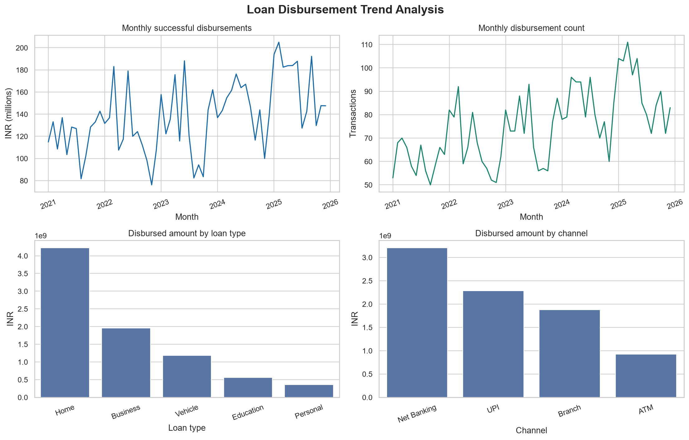

ABES Engineering College · MCA 2nd Year · Data Analyst
Synthetic transaction data · 2021–2025A successful credit transaction is used as the disbursement proxy because the suggested fields do not identify a separate booking event.
Transaction success rate includes both credits and debits; it is not the disbursement success rate.
February 2025: INR 205,004,681
Review month-to-month changes alongside policy, seasonality and operating context before assigning causes.

| Loan type | Count | Amount |
|---|---|---|
| Home | 984 | INR 4,223,767,990 |
| Business | 638 | INR 1,956,848,837 |
| Vehicle | 900 | INR 1,186,365,165 |
| Education | 551 | INR 562,364,817 |
| Personal | 1,418 | INR 360,040,778 |
Compare counts as well as amounts; larger average ticket size can shift total volume.
Delinquency is only a sample transaction-level flag here. A portfolio delinquency rate requires validated loan status history and a defined aging threshold.
Illustrative synthetic data has no real-world evidentiary value.